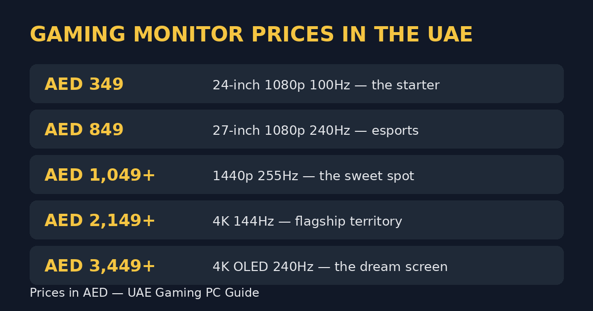

Monitor shopping goes wrong in a predictable way: people compare headline prices without comparing what the price buys. A AED 349 screen and a AED 3,449 screen are not expensive and cheap versions of the same thing — they are different tools for different machines. This guide walks the UAE price tiers one by one, so the number you pay maps to the experience you actually get.

At AED 349, a 24-inch 1080p 100Hz panel is the honest starter — fine for a first build or a second screen. AED 849 buys the esports jump: 27-inch 1080p at 240Hz. The tier most buyers should study is 1440p, from AED 1,049 at 255Hz and above; it is where price and performance shake hands. Above that, 4K 144Hz starts at AED 2,149, OLED 240Hz models run AED 2,329–2,999, and the 4K OLED 240Hz flagships sit at AED 3,449–4,409. Anyone comparing the gaming monitor price in uae across shops will find the same shape: the ladder is consistent, and the jumps between rungs are where the value hides.
| Tier | Spec | UAE price (AED) | Who it suits |
|---|---|---|---|
| Starter | 24" 1080p 100Hz | 349 | First builds, second screens |
| Esports | 27" 1080p 240Hz | 849 | Competitive players |
| Sweet spot | 1440p 255Hz+ | From 1,049 | Most modern GPUs |
| 4K | 4K 144Hz | From 2,149 | RTX 5070 Ti and up |
| Flagship | 4K OLED 240Hz | 3,449 – 4,409 | RTX 5080 / 5090 builds |
The common mistake is building the PC first and squeezing the monitor out of whatever budget survives. Reverse it. Choose the screen tier, and the graphics card picks itself: 1080p high-refresh wants an RTX 5060-class card, 1440p wants a 5060 Ti to 5070 Ti, and 4K OLED only makes sense behind a 5080. If you are speccing the whole machine at once, read the full guide to building part by part with live AED totals — it shows how the monitor row and the card row should be decided in the same sitting, not a month apart.
Once the screen is chosen, the rest of the machine has a clear target to hit. Our companion custom gaming PC builder guide walks the build part by part — GPU first, live totals at every step — so the PC and the monitor arrive as one decision, not two.
Five tiers, five honest prices: 349, 849, 1,049, 2,149, and the OLED flagships above 3,449. Pick the tier your games and your card agree on, and the monitor stops being a guess and becomes the best-planned part of the setup.